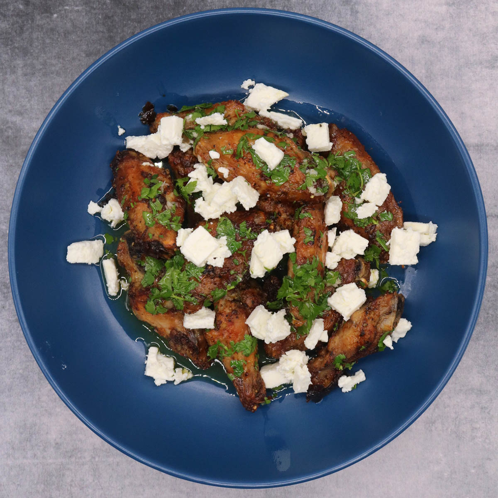

Hot Wings And Feta Cheese
Hot Wings And Feta Cheese

Description:
Hot wings and feta cheese is what I eat almost everyday because it's easy to make and you can get a lot of protein into
a dish quite easily. Also i'm poor and it's very cheap to make ahahah!!
Ingredients:
- 1 KG of hot wings
- 150G of feta cheese
- 500g of whatever vegetables you want
Spices:
- Salt, pepper, thyme, paprique, ginger and garlic. You can add chili etc or curry depending on the flavor type you want!
How to:
- First open a packet of hot wings and defrost them.
- Once they are defrosted you can either use a knife and cut them inhalf at the bone or keep the wings together it's your choice
- Add your selected vegeteables, feta cheese and season with the spices above.
- Put the tray with everything into the oven att 225C
- Take out the tray after 25-30 minutes and flip the chicken wings, re-season and then put them back into the oven
- Remove the tray once the chicken looks done and before the spices start to burn!
Bone apple tea!